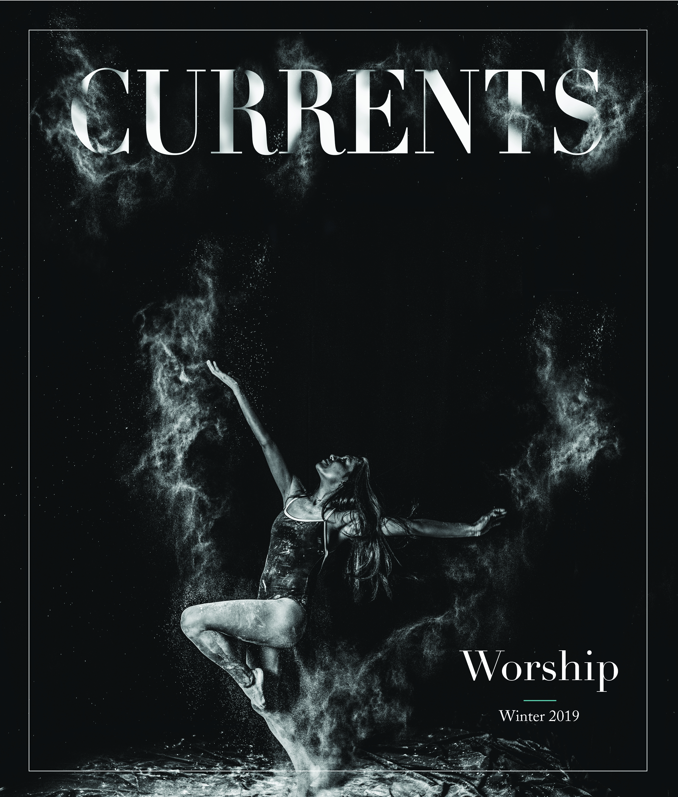
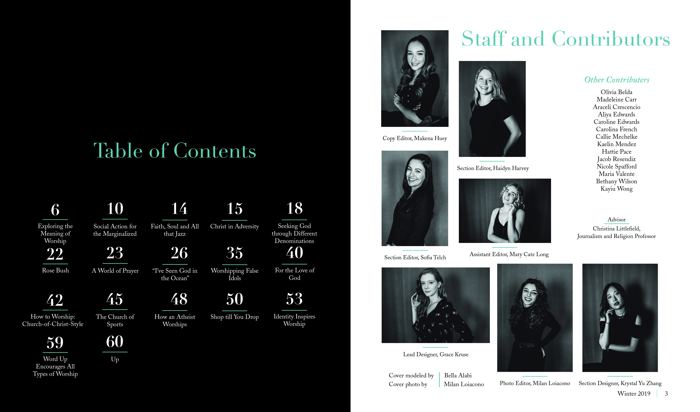
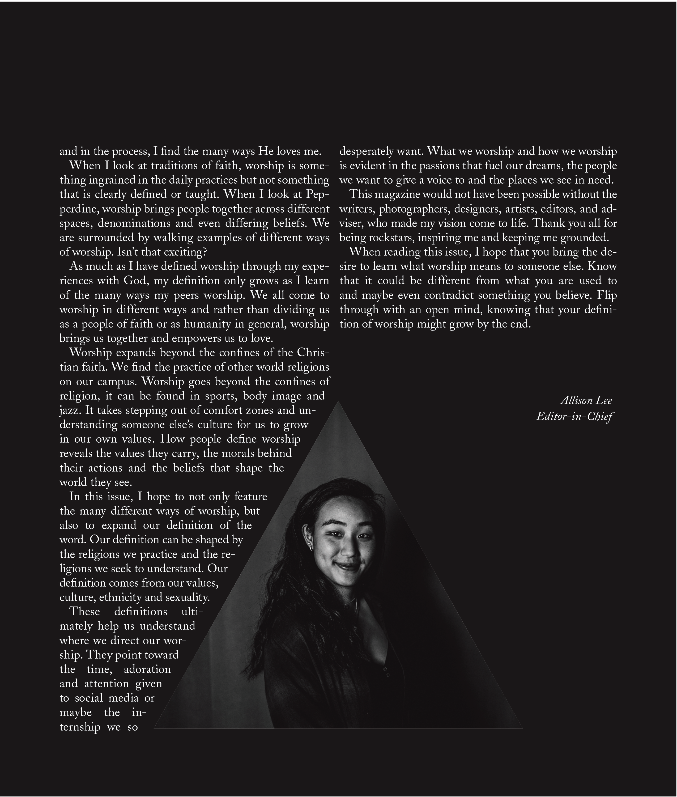
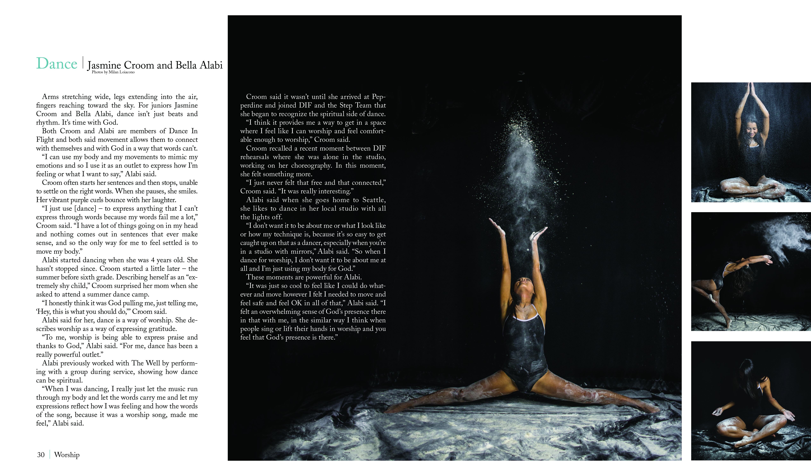
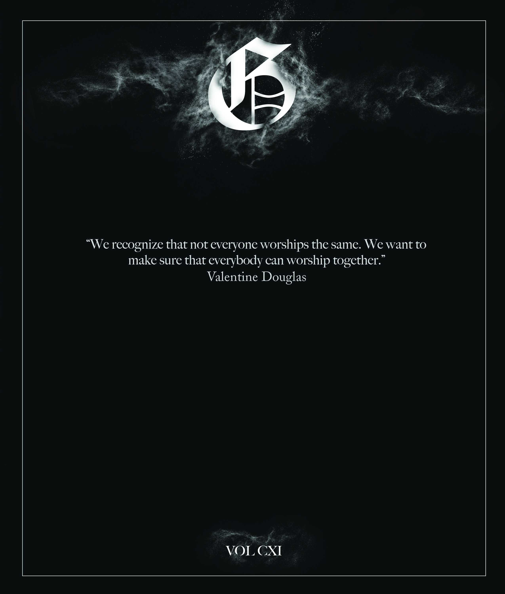

I've always said that being a designer is like creating one of Immanuel Kant's universal laws. You "act only on that maxim through which you can at the same time will that it should become a universal law". In design terms, that means only create a design rule if it could be used on every page, anywhere, by any person, and have it look as though it belongs. The theme for the first magazine I designed was "Worship". Although the content explored a variety of ways to worship, I wanted to keep my style traditional with serif fonts and peaceful colors. The goal was to see if I could create a design system that could be as detailed as a universal law. View the full magazine on Issuu.




